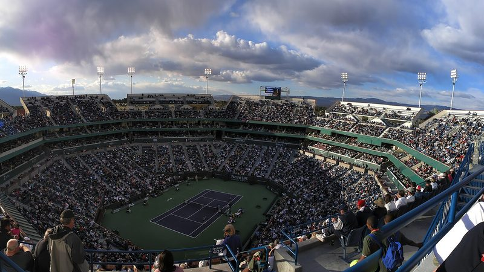

BNP Paribas Open 2027: the valley’s biggest two weeks.
Every March the best tennis players in the world move into Indian Wells. The tournament everyone here just calls “Indian Wells,” the 2027 BNP Paribas Open, runs Sunday, Feb 28 to Sunday, Mar 14 at the Indian Wells Tennis Garden. More than 300 men and women play on 9 match courts, and the practice courts sit right next to the walkways. Last year 527,626 people came through the gates, the most ever. Here’s what’s on each day, which ticket gets you where, the best days to go, where to stay and eat, and how locals do it.

By the numbers
It’s the biggest combined men’s and women’s event of the year outside the four Grand Slams: an ATP Masters 1000 and a WTA 1000 at the same time, on the same grounds. Players and fans call it “Tennis Paradise.”
Indian Wells 2027 schedule, day by day
This is the tournament’s own 2027 schedule, which it says may still change. The order of play for each next day is posted every evening.
| Dates | Round | Good to know |
|---|---|---|
| Sun, Feb 28 to Tue, Mar 2 | Qualifying, men and women | $10 a day, and the money goes to the volunteers’ foundation. 48 players fight for 12 spots in each draw. Opening weekend has the Family Day kickoff, and the draw ceremony is on the Monday at Stadium Plaza. The cheapest way to see top players up close. |
| Wed, Mar 3 & Thu, Mar 4 | Round 1 | Every court is busy. Best days to wander with a Grounds Pass. |
| Fri, Mar 5 & Sat, Mar 6 | Round 2 | The top seeds play their first matches (they skip round 1). |
| Sun, Mar 7 & Mon, Mar 8 | Round 3 | The middle weekend, and the busiest. Come early. |
| Tue, Mar 9 & Wed, Mar 10 | Round of 16 | Big names on the big courts, day and night. |
| Thu, Mar 11 | Quarterfinals | |
| Fri, Mar 12 | Women’s semifinals | |
| Sat, Mar 13 | Men’s semifinals | |
| Sun, Mar 14 | Both finals | Championship Sunday. Stadium 1 only. |
Daily times
- Gates
- 10 AM
- First ball
- 11 AM Pacific
- Night session
- Stadium 1 entry from 4:30 PM, first match at 6 PM
- Closes
- One hour after the last match
The practice courts
Twenty practice courts sit on the south side of Stadium 1, and anyone with a ticket or Grounds Pass can watch. This is where you see the stars from a few feet away. The practice schedule goes up each day on the tournament site.
Food, music and shopping
There’s live entertainment every day, food villages around the stadiums, shops and the player lawn, all with the Santa Rosa Mountains behind them. The grounds are cashless, so bring a card or phone.
Best days to go
| If you want | Go | Why |
|---|---|---|
| Pros up close for almost nothing | Feb 28 to Mar 2 (qualifying) | $10 gets you in, the crowds are light, and the big names are on the practice courts getting ready. |
| The most tennis for a Grounds Pass | Mar 3 to 6 (rounds 1 and 2) | Every outside court has matches all day. The top seeds play their first matches Mar 5 and 6. |
| Stars under the lights | A night session, Mar 3 to 12 | Two big matches in Stadium 1 from 6 PM, after the heat of the day. |
| The best matchups | Mar 9 and 10 (round of 16) | The field is down to the top players, and there’s still a full day of matches. |
| A trophy | Sat, Mar 13 or Sun, Mar 14 | Semifinals and finals. Stadium 1 tickets only, and they cost the most. |
Is a Grounds Pass worth it? Yes in the first week, when Stadiums 3 to 9 and the practice courts are busy from 11 AM on. From the quarterfinals on, almost every match is in Stadium 1, so a Grounds Pass mostly buys you the grounds and the practice courts.
Indian Wells tickets: which one gets you where
2027 tickets are on sale now on the tournament’s site. The big change for 2027: Stadium 2 is now reserved seats only. A Stadium 1 ticket or a Grounds Pass no longer gets you into Stadium 2.
| Ticket | Gets you into | Doesn’t include |
|---|---|---|
| Qualifying day ($10) | Everything open on Feb 28, Mar 1 and Mar 2 | |
| Grounds Pass | First-come seats on Stadiums 3 to 9, every practice court, the grounds all day | Stadiums 1 and 2 |
| Stadium 3 ticket | A reserved seat at Stadium 3 (rows A to D, west and south sides), plus Stadiums 4 to 9 | Stadiums 1 and 2 |
| Stadium 2 ticket | Your reserved seat in Stadium 2, plus Stadiums 3 to 9 | Stadium 1 |
| Stadium 1 day or night | Your reserved seat in Stadium 1 for that session, plus Stadiums 3 to 9 | Stadium 2 |
| Packages | Series (every session, one seat), Mini (a few days) and Travel or Hotel packages |
What the packages cost
These are the “starting at” prices on the tournament’s ticket page as of Nov 19, 2026. The best seats in each section cost more, and single-session prices change by day, so check the ticket page for your date.
Mini packages: a few days in the same Stadium 1 seat
| Package | Starting at | What you get |
|---|---|---|
| Final Weekend | $540 | Every session from Fri, Mar 12 through Sun, Mar 14: both semifinal days and both finals |
| Mid Week | $660 | Six sessions in week two (Mar 9 to 11): round of 16 and quarterfinals |
| Kick Off Weekend | $750 | All six sessions of the first main-draw weekend (Mar 5 to 7) |
| Electric Evenings | $850 | Every night session, Mar 3 to 12. Two big matches under the lights from 6 PM |
| Championship Weekend | $1,330 | Sat, Mar 13 and Sun, Mar 14, with the title matches |
Series packages: the same Stadium 1 seat for all two weeks
| Seat | Starting at | Where |
|---|---|---|
| Stadium Box | $3,200 | Lower bowl. Preferred parking |
| Courtside Box | $4,160 | Lower bowl. Preferred parking |
| Premium Courtside Box | $5,590 | Preferred parking |
| Front Box | $8,840 | Large cushioned seats in the first two rows from the court. Premium parking |
| Club Suite | $10,640 | Suite 208, indoor and outdoor seats, food and drink available to buy. Valet parking |
| Premium Club Suite | $19,330 | Suite 209, indoor and outdoor seats with food and drink service. Valet parking |
Parking on series packages is one pass for every 2 seats. Groups of 10 or more can book reserved Stadium 1 seats as a group, and groups of 50 or more get two free Stadium Box tickets to a session of their choice (the All Pro Package). Private suites on the 300 level of Stadium 1 can be booked by the day, or for the whole tournament from $100,000 (22 to 39 seats, shaded, air-conditioned, VIP parking). Suites are booked by contacting the tournament.
Hotel packages: room plus tickets
| Hotel | Starting at | Where |
|---|---|---|
| Best Western Plus Palm Desert | $885 | 3-star, near El Paseo, breakfast included |
| Homewood Suites | $970 | 3-star all-suite in La Quinta, breakfast included. No shuttle |
| Omni Rancho Las Palmas | $1,080 | 4-star resort in Rancho Mirage |
| Embassy Suites La Quinta | $1,325 | 4-star all-suite, breakfast and evening reception |
| Chateau Lake La Quinta | $1,735 | 4-star boutique on Lake La Quinta. No shuttle |
| Tommy Bahama Miramonte Resort | $1,735 | 4-star resort in Indian Wells |
| Hotel Paseo | $1,785 | 4-star boutique off El Paseo, Palm Desert |
| La Quinta Resort & Club | $1,785 | Historic resort, open since 1926 |
| Renaissance Esmeralda Indian Wells | $1,845 | 4-star resort minutes from the Tennis Garden |
Most hotel packages include the free tournament shuttle, and your room key is your shuttle pass. The two marked “No shuttle” don’t include transportation.
Mini packages → Series packages → Travel and hotel packages →
Want to see where you’d sit? The tournament has seating charts and views for Stadiums 1, 2 and 3 on its Explore Stadiums page.
Military, students and 55+
Military, college students and seniors 55 and up get 30% off single-session Prime Loge seats for March 3 to 11. You verify through ID.me on the tournament site.
Tickets live in the app
Every ticket is digital, through AXS, and opens in the official BNP Paribas Open app. The QR code refreshes every 60 seconds, so a screenshot won’t scan. Kids 3 and up need their own full-price ticket. Official resale is on AXS.
Box office
- Phone
- 1-800-999-1585
- Hours
- Mon to Fri, 10 AM to 5 PM
If rain stops play before one match finishes or 90 minutes are played, eligible single tickets can be swapped for a next-day Grounds Pass.
Getting to the Indian Wells Tennis Garden, and parking
Parking
- Where
- The General Lot, off Miles Ave
- Cost
- Free
- Venue
- Indian Wells Tennis Garden, 78-200 Miles Ave, Indian Wells
General parking is free. VIP and valet parking are also offered; see the tournament’s parking guide.
Drop-off and ADA
- Uber / Lyft
- Drop-off and pick-up at Gate 10 on Warner Trail, a short walk to the North Gate
- ADA parking
- Gate 9 on Warner Trail, first come, first served
- Help line
- 1-800-999-1585, option 2
Wheelchair seating is reserved in Stadiums 1, 2 and 3, with up to three companions. Elevators are at Stadium 1 entries B and E and Stadium 2 entries G and H. Bring your own mobility device; none are rented on site.
Flying in
The nearest airport is Palm Springs International (PSP), about a 30-minute drive. Ontario is 1 to 1.5 hours away and LAX 2 to 2.5 hours. Hotel package guests ride free shuttles (your room key is your pass), dropping off near the East Gate.
Local tip: Washington St, Miles Ave and Hwy 111 around Indian Wells back up on the middle weekend and on night-session evenings. Leave early, and plan dinner before or after rather than at 6 PM.
What you can bring (and what you can’t)
Bags
One clear plastic, vinyl or PVC bag up to 12 x 6 x 12 inches, or a one-gallon clear freezer bag. A small clutch up to 4.5 x 6.5 inches is fine too. Lockers are outside each gate and inside at the Stadium 1 retail courtyard and the Stadium 2 Food Village.
Not allowed
Outside food or alcohol, glass, open drinks, hard-sided bags or coolers, umbrellas, iPads and laptops, cameras with detachable lenses, and pro autograph gear. No smoking or vaping. Only service animals. You can’t save seats.
Bring
A hat, sunscreen and sunglasses: much of the seating is in full sun. March in Indian Wells averages highs in the low 70s and lows around 50, with warm spells in the 80s. Bring a jacket for night sessions, since the desert cools off fast after sunset. A card or phone to pay. Strollers are fine. Leaving and coming back? Get a re-entry wristband at a gate or Guest Services first.
Champions
| Year | Women’s singles | Men’s singles |
|---|---|---|
| 2026 | Aryna Sabalenka d. Elena Rybakina, 3-6, 6-3, 7-6 | Jannik Sinner d. Daniil Medvedev, 7-6, 7-6 |
| 2025 | Mirra Andreeva (age 17) d. Aryna Sabalenka | Jack Draper d. Holger Rune |
| 2024 | Iga Swiatek d. Maria Sakkari | Carlos Alcaraz d. Daniil Medvedev |
| 2023 | Elena Rybakina d. Aryna Sabalenka | Carlos Alcaraz d. Daniil Medvedev |
| 2022 | Iga Swiatek | Taylor Fritz d. Rafael Nadal |
Sabalenka and Sinner are the defending champions. In 2026 each singles champion took home $1,151,380, from a purse of $9,415,725 per tour, split equally between the men and the women. Novak Djokovic and Roger Federer have won here five times each, Rafael Nadal three times, and Serena Williams twice. The event started in 1976 as the American Airlines Tennis Games at Mission Hills, moved to the Indian Wells Tennis Garden when it opened in 2000, and in 2012 became the only combined men’s and women’s event to pay each singles champion $1 million.
Hotels: where to stay for Indian Wells
The closest hotels are the resorts in Indian Wells itself, along Hwy 111 a few minutes from the gates. Palm Desert, La Quinta and Rancho Mirage are 10 to 20 minutes away and usually cost less. Hotels across the valley fill up for the middle weekend (Mar 6 to 8), so book early.
The easiest option is a tournament hotel package: the room and tickets come together, and most include the free tournament shuttle with your room key as the pass. The nine hotels in the program, from the Best Western Plus Palm Desert ($885) to the Renaissance Esmeralda Indian Wells ($1,845), are in the hotel package table above.
Restaurants near the Indian Wells Tennis Garden
Food inside is cashless and pricey. These are in our directory and close to the gates. Plan dinner before a 6 PM night session or after the traffic clears, not right at 6.
Closest
- Kestrel, A Richard Blais Kitchen + Lounge · American
- The Pink Cabana · American
- Vicky’s of Santa Fe · American, live music
- Don Diego’s of Indian Wells · Mexican
- The Nest · American
- Indian Kitchen · Indian
- IW Coffee · coffee before the gates open
- It’s A Deli · sandwiches
Palm Desert, north side
- Flor de Jalisco · Mexican
- The 19th Hole · American
- Goody’s Cafe · breakfast
- Carmen’s · Mexican
- Oceana Restaurant · seafood
- Project Burger · burgers
El Paseo, for dinner after
- Ristorante Mamma Gina · Italian
- Casa Mendoza · Mexican
- Mitch’s on El Paseo · seafood
- Ruth’s Chris Steak House · steaks
- Cafe des Beaux-Arts · French bistro
- The Hideout Kitchen + Bar · American
How to watch Indian Wells on TV
In 2026, Tennis Channel had every match in the US, on Tennis Channel, Tennis Channel 2 and the Tennis Channel app. You could also stream it through Fubo or DirecTV, and Tennis TV streamed the men’s matches. The 2027 TV deal hasn’t been announced yet; we’ll update this when it is. Watching locally? Plenty of bars in the valley put the matches on, so check our happy hours list.
Who’s playing in 2027?
The 2027 player list isn’t out yet. The entry lists usually come out about six weeks before the main draw, so look for them in late January. Almost every top-ranked man and woman plays here each year. The draw ceremony is on Monday, Mar 1.
Make a day of it
Shop and stroll
El Paseo in Palm Desert, about 10 minutes west, is the valley’s shopping street, with galleries, boutiques and patios for a slow afternoon before a night session.
Play tennis yourself
The Tennis Garden is a membership club the rest of the year, and public courts all over the valley are free. Most are lit for play after dark.
Indian Wells Tennis Garden → Public tennis courts → Pickleball →
More going on
Early March is peak season in the valley. See what else is on while you’re here.
Indian Wells tennis (BNP Paribas Open): quick answers
When is the BNP Paribas Open 2027?
Sunday, February 28 to Sunday, March 14, 2027, at the Indian Wells Tennis Garden, 78-200 Miles Ave, Indian Wells. Qualifying runs Feb 28 to Mar 2, the main draw starts Mar 3, and both singles finals are on Sunday, Mar 14.
How much are tickets to the BNP Paribas Open?
Qualifying days (Feb 28 to Mar 2) cost $10, with the money going to the volunteers’ foundation. Single-session and Grounds Pass prices vary by day on bnpparibasopen.com. Mini packages in Stadium 1 start at $540 (Final Weekend), full-tournament series seats start at $3,200 (Stadium Box), and hotel-plus-ticket packages start at $885. Military, college students and seniors 55+ get 30% off single-session Prime Loge seats Mar 3 to 11 through ID.me.
Is parking free at the BNP Paribas Open?
Yes. General parking is free in the General Lot off Miles Avenue. Rideshare drop-off is at Gate 10 on Warner Trail, and ADA placard parking is at Gate 9 on Warner Trail.
Does a Grounds Pass get you into Stadium 2 in 2027?
No. Starting in 2027, Stadium 2 is reserved seats only. A Grounds Pass covers first-come seats on Stadiums 3 to 9, all the practice courts and the grounds. A Stadium 1 ticket doesn’t include Stadium 2 either.
What is the bag policy at Indian Wells?
One clear plastic, vinyl or PVC bag up to 12 x 6 x 12 inches, or a one-gallon clear freezer bag, plus a small clutch up to 4.5 x 6.5 inches. No outside food or alcohol, umbrellas, glass, hard-sided bags, laptops or cameras with detachable lenses.
What time do gates open at the BNP Paribas Open?
Gates open at 10 AM and matches start at 11 AM Pacific. Night-session entry to Stadium 1 starts at 4:30 PM, with the first night match at 6 PM. The grounds close one hour after the last match.
Who won the BNP Paribas Open in 2026?
Aryna Sabalenka won the women’s title over Elena Rybakina, 3-6, 6-3, 7-6, and Jannik Sinner won the men’s title over Daniil Medvedev, 7-6, 7-6. It was the first Indian Wells title for both.
What is the best day to go to Indian Wells?
For the most tennis, go Mar 3 to 6 with a Grounds Pass, when every court has matches all day and the top seeds play their first matches (Mar 5 and 6). For pros up close for almost nothing, go on a $10 qualifying day, Feb 28 to Mar 2. For the best matchups, go to the round of 16 on Mar 9 or 10. The finals are Sunday, Mar 14.
Is a Grounds Pass worth it at Indian Wells?
Yes in the first week. It covers first-come seats on Stadiums 3 to 9, all 20 practice courts and the grounds, and those courts have matches all day through the round of 16. From the quarterfinals on, nearly every match is in Stadium 1, which a Grounds Pass doesn’t include.
What is the weather like at Indian Wells in March?
March in Indian Wells averages highs in the low 70s and lows around 50, with warm spells in the 80s. Much of the seating is in full sun, so bring a hat, sunscreen and sunglasses, plus a jacket for night sessions. Umbrellas aren’t allowed in.
Where should I stay for the BNP Paribas Open?
The closest hotels are the resorts in Indian Wells, along Hwy 111 a few minutes from the gates. Palm Desert, La Quinta and Rancho Mirage are 10 to 20 minutes away. Tournament hotel packages start at $885 and most include the free shuttle. Book early for the middle weekend, Mar 6 to 8.
Where can I eat near the Indian Wells Tennis Garden?
The closest restaurants are on Hwy 111 in Indian Wells, a few minutes from the gates, including Kestrel, The Pink Cabana, Vicky’s of Santa Fe and Don Diego’s. Washington Street in Palm Desert and El Paseo, about 10 minutes west, have many more.
What channel is Indian Wells on?
In 2026, Tennis Channel carried every match in the US, on Tennis Channel, Tennis Channel 2 and the Tennis Channel app, with streaming through Fubo and DirecTV. The 2027 TV deal hasn’t been announced yet.
Who is playing at Indian Wells in 2027?
The 2027 entry lists haven’t come out yet. They usually come out about six weeks before the main draw, so late January. Almost every top-ranked man and woman plays the event each year. Aryna Sabalenka and Jannik Sinner are the defending champions.
How much prize money does the Indian Wells champion get?
In 2026 each singles champion won $1,151,380. The purse was $9,415,725 for each tour, split equally between the men and the women.
Dates, schedule, ticket rules, parking and bag policy come from the tournament’s own website (bnpparibasopen.com, checked November 19, 2026, the 100-days-to-go mark). TV and prize money come from Tennis Channel and the ATP Tour, and weather from long-term March averages. The tournament says the schedule may change, so check its site before you go. Running a watch party, special or event around the tournament? Add it free.